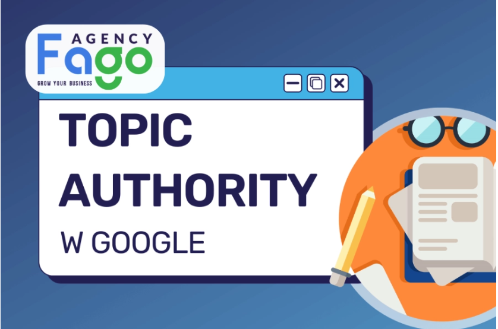
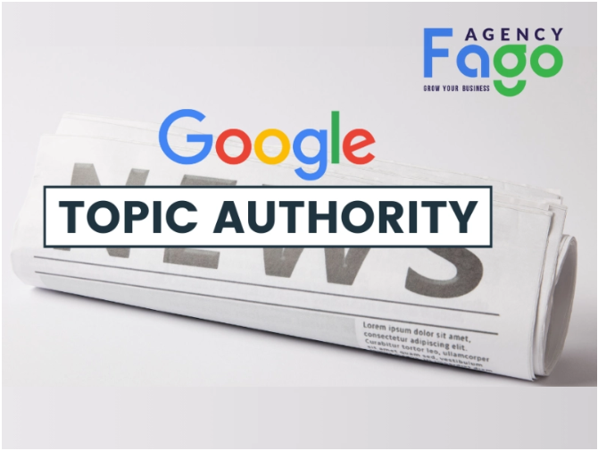
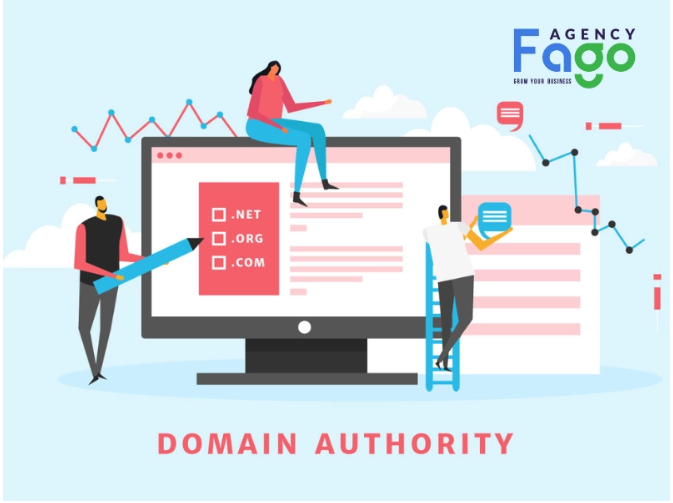
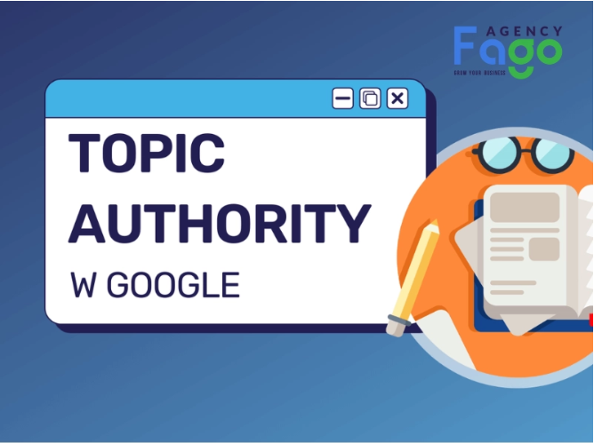
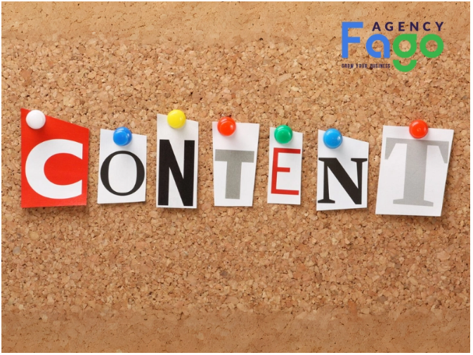
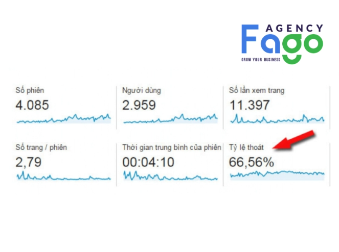
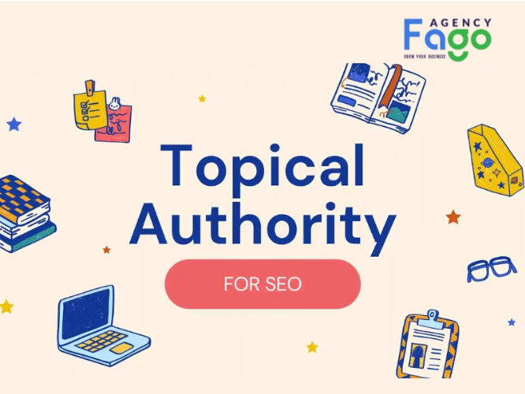
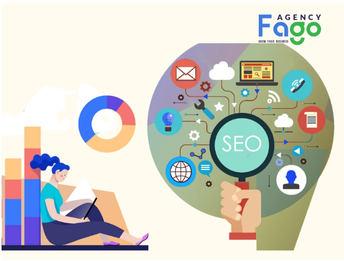

Topic Authority Là Gì? Cách Xây Dựng Topic Authority Cho Website Hiệu Quả
Khám phá Content Angle là gì? Tìm hiểu định nghĩa, vai trò và cách ứng dụng Content Angle hiệu quả trong chiến lược content marketing. Tìm hiểu ngay!

Khi nói đến việc tối ưu hóa công cụ tìm kiếm (SEO), một thuật ngữ ngày càng được nhắc đến nhiều hơn chính là "Topic Authority". Nhưng Topic Authority là gì? Mục tiêu của bài viết này là cung cấp cho bạn kiến thức toàn diện về Topic Authority, từ khái niệm cơ bản đến các chiến lược cụ thể để xây dựng và duy trì uy tín trong lĩnh vực của mình.
1. Hiểu rõ về Topic Authority
Cách Google đánh giá Topic Authority
Để hiểu rõ Topic Authority là gì, bạn cần nắm được cách Google đánh giá yếu tố này. Google sử dụng nhiều tiêu chí khác nhau để xác định mức độ uy tín của một website trong một lĩnh vực cụ thể. Dưới đây là các yếu tố chính:
Google ưu tiên các bài viết có chiều sâu, chi tiết, độc đáo và mang lại giá trị thực sự cho người đọc. Nội dung không chỉ cần trả lời đúng câu hỏi của người dùng mà còn phải cung cấp thông tin bổ sung hữu ích. Ví dụ, nếu bạn viết về "cách xây dựng chiến lược marketing", bài viết cần bao gồm các bước cụ thể, ví dụ thực tế và các công cụ hỗ trợ.
Backlink từ các website uy tín trong cùng lĩnh vực đóng vai trò quan trọng trong việc xây dựng Topic Authority. Những liên kết này giống như "phiếu bầu" cho thấy nội dung của bạn đáng tin cậy và có giá trị. Theo một nghiên cứu từ Backlinko, các website có nhiều backlink chất lượng thường có thứ hạng cao hơn trên Google.

Sự khác biệt giữa Topic Authority và Domain Authority
Nhiều người thường nhầm lẫn giữa Topic Authority và domain authority. Dưới đây là sự khác biệt chính:
- Topic Authority: Tập trung vào mức độ uy tín của website trong một chủ đề hoặc lĩnh vực cụ thể. Ví dụ, một website chuyên về "SEO" có thể có Topic Authority cao trong lĩnh vực này nhưng không nhất thiết phải mạnh ở các lĩnh vực khác như "thời trang" hay "ẩm thực".
- Domain Authority: Là chỉ số tổng thể đo lường sức mạnh của toàn bộ website, không giới hạn trong một lĩnh vực cụ thể. Chỉ số này được phát triển bởi Moz và thường được sử dụng để đánh giá khả năng xếp hạng của website trên công cụ tìm kiếm.

Lợi ích của Topic Authority
Xây dựng Topic Authority mang lại nhiều lợi ích thiết thực cho website của bạn:
- Tăng thứ hạng tìm kiếm: Khi Google nhận thấy website của bạn có uy tín trong một lĩnh vực, các từ khóa liên quan sẽ có thứ hạng cao hơn. Điều này giúp bạn tiếp cận đúng đối tượng mục tiêu.
- Tăng lượng truy cập chất lượng:Người dùng tìm đến nội dung của bạn vì họ tin rằng bạn là chuyên gia trong lĩnh vực đó. Điều này không chỉ tăng lượng truy cập mà còn cải thiện tỷ lệ chuyển đổi.
- Tăng độ tin cậy của website: Một website có Topic Authority cao thường được người dùng và các đối tác đánh giá cao hơn, từ đó tạo dựng lòng tin và uy tín lâu dài.

2. Các yếu tố ảnh hưởng đến Topic Authority
Nội Dung
- Chất lượng nội dung: Nội dung cần phải sâu sắc, chi tiết và độc đáo. Ví dụ, thay vì viết một bài viết chung chung về "SEO", bạn có thể tạo một hướng dẫn chi tiết về "Cách tối ưu hóa SEO On-page cho doanh nghiệp nhỏ". Điều này không chỉ thu hút người đọc mà còn giúp Google đánh giá cao nội dung của bạn.
- Cập nhật nội dung thường xuyên: Google ưu tiên các website có nội dung được cập nhật mới. Điều này cho thấy bạn luôn cung cấp thông tin chính xác và phù hợp với xu hướng.
- Sử dụng từ khóa liên quan một cách tự nhiên: Việc sử dụng từ khóa chính như "Topic Authority là gì" và các từ khóa liên quan cần được thực hiện tự nhiên, tránh nhồi nhét từ khóa. Điều này giúp nội dung thân thiện hơn với cả người đọc và công cụ tìm kiếm.

Liên kết
- Liên kết nội bộ: Kết nối các bài viết liên quan trong website giúp người đọc dễ dàng tìm thấy thông tin họ cần, đồng thời cải thiện trải nghiệm người dùng. Ví dụ, nếu bạn có một bài viết về "SEO On-page", hãy liên kết đến các bài viết khác như "Nghiên cứu từ khóa" hoặc "Tối ưu hóa nội dung".
- Liên kết ngoại bộ: Nhận backlink từ các website uy tín trong cùng lĩnh vực là một cách hiệu quả để xây dựng Topic Authority. Bạn có thể đạt được điều này thông qua việc viết bài guest post hoặc tham gia các diễn đàn chuyên ngành.
Hành vi người dùng
- Tỷ lệ thoát (Bounce Rate): Nếu người dùng rời khỏi website ngay lập tức, điều này có thể ảnh hưởng tiêu cực đến Topic Authority. Để giảm tỷ lệ thoát, hãy đảm bảo nội dung của bạn hấp dẫn và đáp ứng đúng nhu cầu của người đọc.
- Tỷ lệ click-through rate (CTR): Một tiêu đề hấp dẫn và mô tả meta rõ ràng sẽ thu hút người dùng click vào kết quả tìm kiếm của bạn, cải thiện CTR và tăng cơ hội xếp hạng cao hơn.

Tín hiệu xã hội
- Số lượng chia sẻ trên mạng xã hội: Nội dung được chia sẻ nhiều trên các nền tảng như Facebook, LinkedIn, Twitter không chỉ tăng khả năng tiếp cận mà còn giúp Google nhận thấy nội dung của bạn có giá trị.
- Lượng bình luận và tương tác: Các bài viết có nhiều bình luận và tương tác thường được Google đánh giá cao hơn, vì điều này cho thấy nội dung của bạn thực sự hữu ích và thu hút sự chú ý.
3. Cách xây dựng Topic Authority
Nghiên cứu từ khóa
Bước đầu tiên và quan trọng nhất trong việc xây dựng Topic Authority là nghiên cứu từ khóa. Đây là cách bạn xác định các chủ đề mà người dùng quan tâm và tìm kiếm nhiều nhất trong lĩnh vực của mình.
- Xác định từ khóa chính và từ khóa liên quan: Từ khóa chính như "Topic Authority là gì" cần được kết hợp với các từ khóa liên quan như "xây dựng Topic Authority", "SEO Topic Authority", "tăng uy tín website",... Điều này giúp bạn bao quát toàn bộ chủ đề và cung cấp nội dung đa dạng, phong phú.
- Sử dụng các công cụ nghiên cứu từ khóa: Các công cụ như Google Keyword Planner, Ahrefs, SEMrush hoặc Ubersuggest sẽ giúp bạn tìm ra những từ khóa có lượng tìm kiếm cao và mức độ cạnh tranh thấp. Ví dụ, nếu bạn đang viết về "marketing online", bạn có thể tìm thấy các từ khóa liên quan như "chiến lược marketing online cho doanh nghiệp nhỏ" hoặc "dịch vụ marketing tổng thể".
Tạo nội dung chất lượng
Nội dung chất lượng là yếu tố cốt lõi để xây dựng Topic Authority. Dưới đây là các bước cụ thể:
- Lập kế hoạch nội dung chi tiết: Hãy tạo một lịch trình đăng bài rõ ràng, đảm bảo mỗi bài viết đều tập trung vào một khía cạnh cụ thể của chủ đề. Ví dụ, nếu bạn muốn xây dựng uy tín trong lĩnh vực "SEO", bạn có thể viết các bài như "SEO On-page là gì?", "Cách tối ưu hóa tốc độ tải trang", "Nghiên cứu từ khóa hiệu quả",...
- Viết bài dài và sâu: Các bài viết dài (trên 1.500 từ) thường được Google đánh giá cao hơn vì chúng cung cấp nhiều thông tin hơn cho người đọc. Tuy nhiên, bài viết cần phải sâu sắc và không lan man. Ví dụ, thay vì chỉ liệt kê các công cụ SEO, hãy giải thích cách sử dụng từng công cụ để đạt hiệu quả tối ưu.
- Sử dụng hình ảnh, video để minh họa: Nội dung trực quan như hình ảnh, biểu đồ, video không chỉ giúp bài viết trở nên hấp dẫn hơn mà còn cải thiện thời gian người dùng ở lại trên trang. Điều này góp phần tăng Topic Authority.
Xây dựng liên kết
Liên kết là một trong những yếu tố quan trọng nhất để xây dựng Topic Authority:
- Tìm kiếm các cơ hội backlink từ website uy tín: Hãy hợp tác với các website có uy tín trong lĩnh vực của bạn để nhận được backlink. Ví dụ, bạn có thể viết bài guest post cho các blog lớn hoặc tham gia các hội thảo trực tuyến để chia sẻ kiến thức.
- Tham gia vào các cộng đồng trực tuyến: Các diễn đàn, nhóm Facebook hoặc LinkedIn trong lĩnh vực của bạn là nơi tuyệt vời để chia sẻ nội dung và nhận được sự công nhận từ cộng đồng.
Tối ưu hóa On-page
Tối ưu hóa On-page là bước không thể thiếu để đảm bảo nội dung của bạn thân thiện với công cụ tìm kiếm:
- Sử dụng các thẻ meta, tiêu đề, mô tả một cách hiệu quả:Tiêu đề bài viết cần chứa từ khóa chính và hấp dẫn để thu hút người đọc. Mô tả meta cũng cần ngắn gọn, rõ ràng và chứa từ khóa liên quan.
- Cấu trúc URL thân thiện với SEO: URL nên ngắn gọn, dễ đọc và chứa từ khóa.

4. Fago Agency – Cung cấp dịch vụ SEO uy tín
Kinh nghiệm
Fago Agency tự hào là đơn vị có nhiều năm kinh nghiệm trong việc cung cấp dịch vụ dịch vụ SEO. Với đội ngũ chuyên gia giàu kinh nghiệm và am hiểu sâu sắc về SEO, chúng tôi đã đồng hành cùng hàng trăm doanh nghiệp nhỏ và siêu nhỏ trên hành trình xây dựng thương hiệu trực tuyến.
Thành tích
Chúng tôi đã thực hiện thành công nhiều dự án SEO lớn nhỏ, giúp khách hàng tăng trưởng đáng kể về lượng truy cập và doanh thu. Một trong những case study nổi bật là việc cải thiện thứ hạng từ khóa cho một doanh nghiệp thương mại điện tử, từ đó tăng 200% doanh thu chỉ trong 6 tháng.
Dịch vụ
Fago Agency cung cấp đa dạng các dịch vụ SEO, bao gồm:
- SEO On-page: Tối ưu hóa nội dung, thẻ meta, cấu trúc website.
- SEO Off-page: Xây dựng backlink chất lượng, tăng tín hiệu xã hội.
- SEO kỹ thuật: Tối ưu hóa tốc độ tải trang, cấu trúc dữ liệu, bảo mật website.
Cam kết
Chúng tôi cam kết mang lại hiệu quả rõ ràng và minh bạch trong từng dự án. Khách hàng sẽ nhận được báo cáo tiến độ chi tiết hàng tháng và chính sách bảo hành dịch vụ để đảm bảo sự hài lòng.

Qua bài viết đã giúp bạn có hiểu hơn về Topic Authority là gì? Nó là yếu tố quan trọng giúp website của bạn tăng thứ hạng tìm kiếm, thu hút lượng truy cập chất lượng và xây dựng uy tín trong lĩnh vực cụ thể. Để đạt được điều này, bạn cần tập trung vào nội dung chất lượng, xây dựng liên kết và tối ưu hóa On-page.
Nếu bạn đang tìm kiếm một đối tác đáng tin cậy để hỗ trợ xây dựng Topic Authority và phát triển doanh nghiệp trực tuyến, hãy liên hệ ngay với Fago Agency. Chúng tôi sẵn sàng đồng hành cùng bạn trên hành trình chinh phục đỉnh cao trong lĩnh vực của mình!